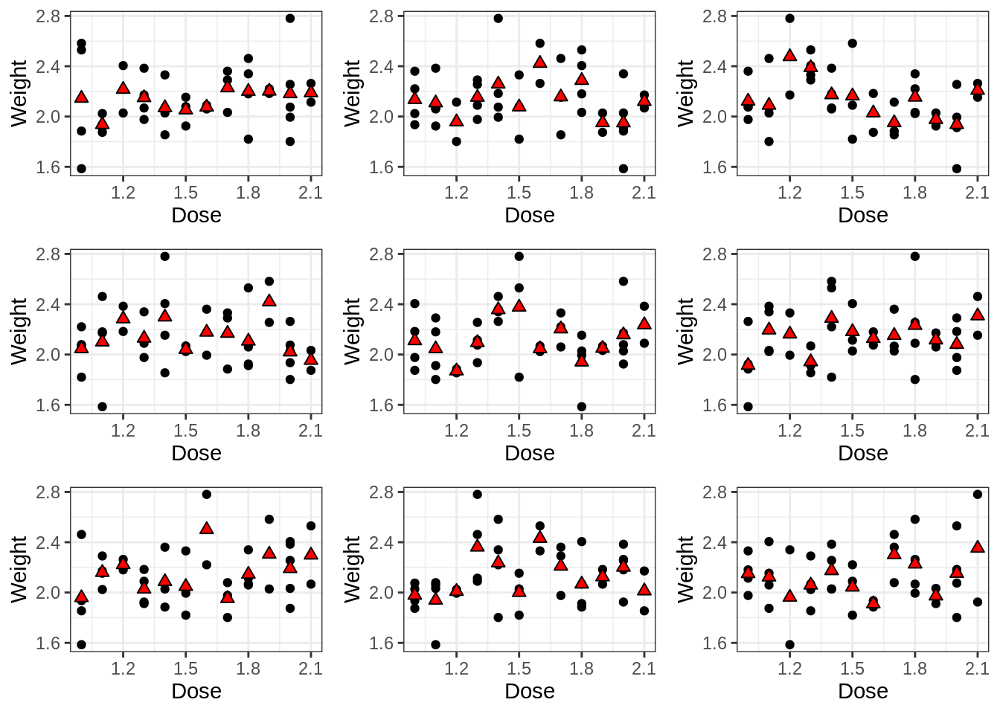
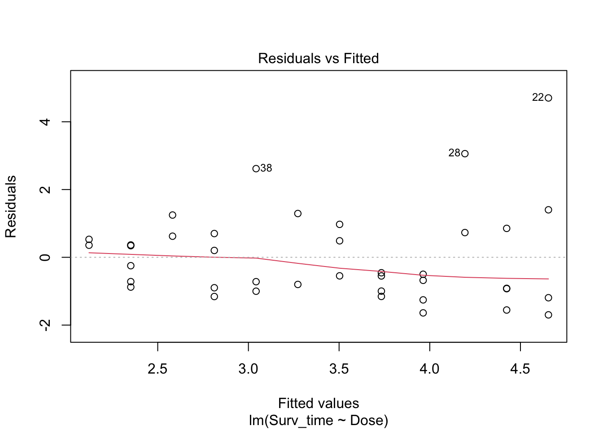
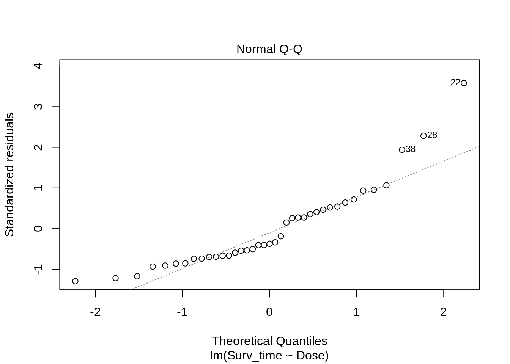
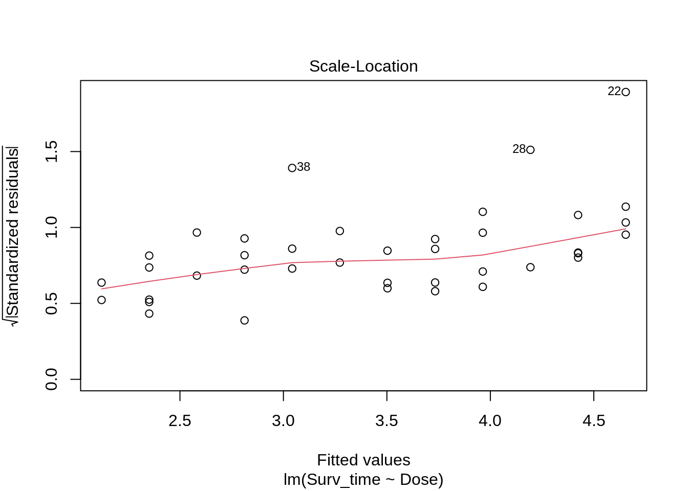
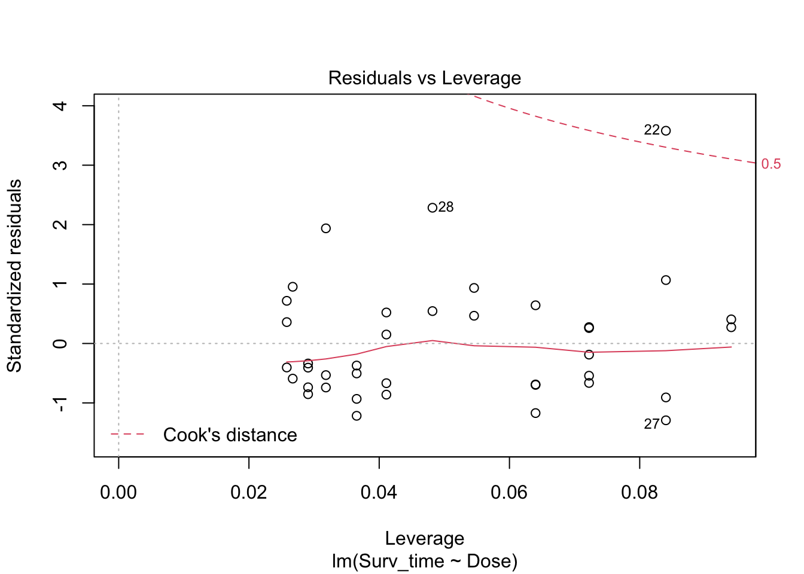
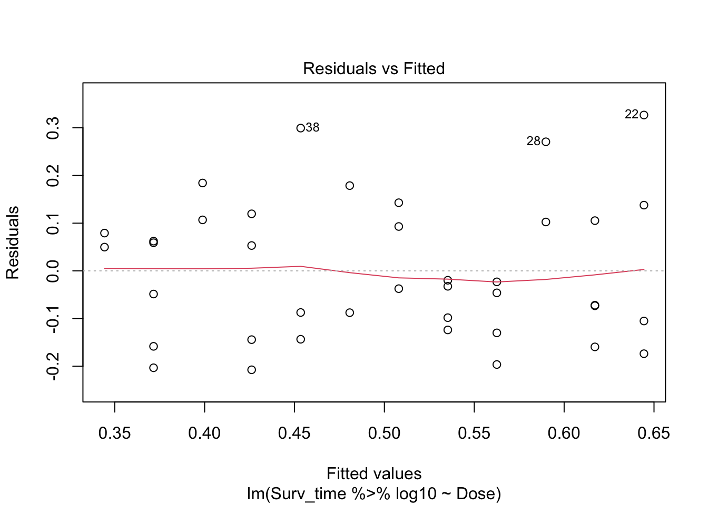
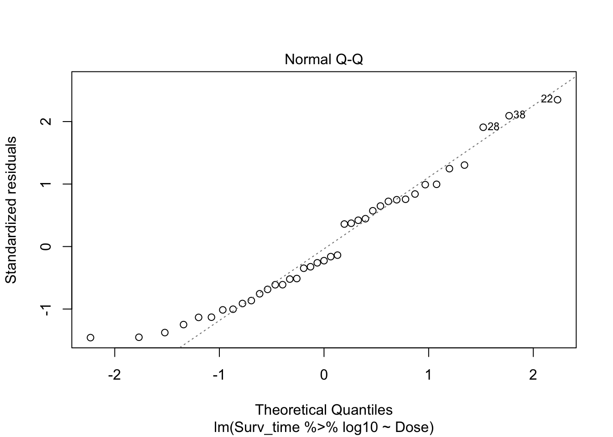
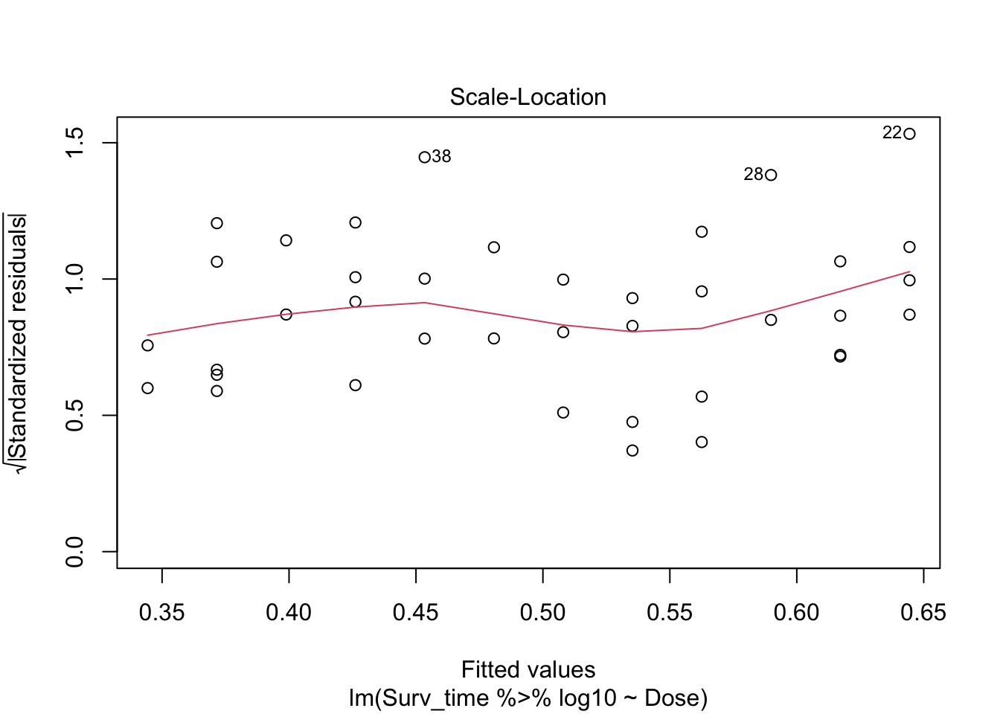
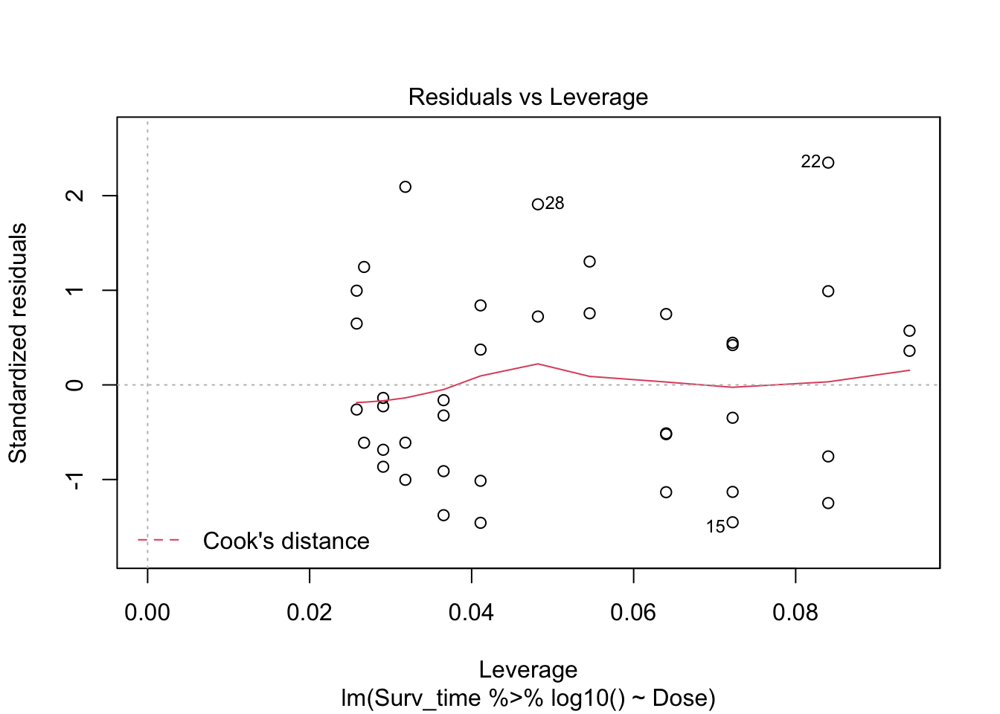
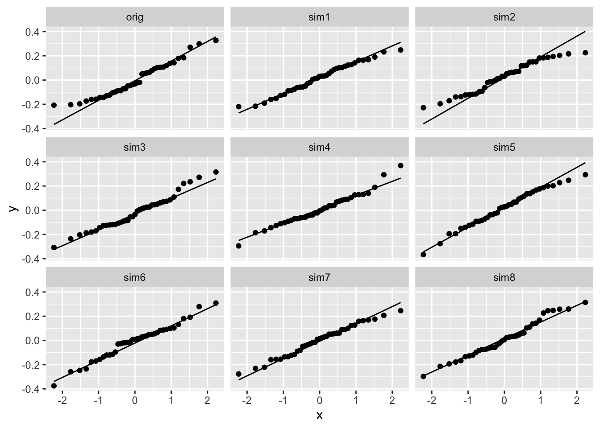

Fish tank dataset
In this experiment, 96 fish (dojofish, goldfish and zebrafish) were placed separately in a tank with two liters of water and a certain dose (in mg) of the poison EI-43,064. The resistance of the fish against the poison was measured as the amount of minutes the fish survived after being exposed to the poison (Surv_time, in minutes). Additionally, the weight of each fish was measured.
Goal
The research goal is to study the association between the dose of the poison that was administered to the fish and their survival time.
Load the required libraries
Import the data
poison <- read_csv("https://raw.githubusercontent.com/statOmics/PSLS21/data/poison.csv")
Data tidying
We can see a couple of things in the data that can be improved upon:
Capitalise the fist column name. Hint: use the rename function.
Set the Species column as a factor. Hint: use the mutate and as.factor functions.
Change the species factor levels from 0, 1 and 2 to Dojofish, Goldfish and Zebrafish. Hint: use the fct_recode function inside the mutate function.
poison <- poison %>%
rename("Species" = "species") %>%
mutate(Species = as.factor(Species)) %>%
mutate(Species = fct_recode(Species, Dojofish = "0", Goldfish = "1", Zebrafish = "2"))
poison
Data exploration
How many fish do we have per species?
poison %>%
count(Species)
Make a suitable visualization of the association between the dose and the survival time. Additionally, add the fish species as a color to the plot.
poison %>%
ggplot(aes(x=Dose,y=Surv_time)) +
geom_point() +
stat_smooth(method = "loess") +
geom_smooth(method='lm',col="black") +
ylab("Survival time (min)") +
xlab("Dose (mg)") +
geom_point(aes(col=Species)) + ## not necessary, additional layer of information
scale_color_manual(values = c("red","darkgoldenrod","black")) +
theme_bw()
## `geom_smooth()` using formula 'y ~ x'
## `geom_smooth()` using formula 'y ~ x'

The linear regression line (black) is a good approximation of the best fitting smooth line (blue) through the data. Based on this figure, it seems realistic to suggest a linear relationship between dose and survival, where higher doses have lower survival times (as expected). However, before we start with the regression analysis we must check if all required assumptions are met.
Important note on the dataset
In this dataset, there are multiple variables can have an effect on the survival time of the fish. The most obvious one is the dose of poison that was administered (as displayed above). However, we could also imagine that heavier fish are less prone to the poison than light fish. Additionally, one fish species may be more resistant to the poison than the other.
As such, not taking into account species into the analysis will introduce problems regarding the assumption of independence of the data. The assumption of independence entails that knowing the response value of one observation (fish) does not learn us anything about the response values for another variable. This will not be the case here; the response values (survival times) of fish of the same species will be much more alike compared to those of fish from another species.
Thus, in order to correctly analyze this data, fish species and weight should be taken into consideration. For now, we will “avoid” taking into account the effect of species into the analysis by only performing an analysis for the dojofish. As such, we will filter the dataset so that it only contains observations for the Dojofish.
# filter the data so it only contains dojofish
poison_dojo <- poison %>%
filter(Species == "Dojofish")
Later in the course, we will come back to this dataset and perform a analysis that allows us to assess the different research hypotheses for all fish species at once!
The second predictor variable, Weight, still may influence our analysis; fish with higher weight are expected to be more resistant to the poison. If there would be a systematic bias in the experiment, e.g. if all lighter fish obtained a low dose of poison and heavier fish obtained a high dose of poison (so, if the dose was not correctly randomized accros the different weights), then we would not be able to correctly estimate the linear association between Dose and survival; indeed, this relationship would be confounded by the effect of weight.
poison_dojo %>%
ggplot(aes(x = Dose, y = Weight)) +
geom_point() +
ggtitle("Association between dose and weight") +
theme_bw() +
stat_summary(
geom = "point",
fun = "mean",
col = "black",
size = 4,
shape = 24,
fill = "red")

In our dataset, there seems to be no systematic bias, i.e., no clear trend in the association between Dose and Weight. However, we do notice that the fish weights are not perfectly uniformly distributed across the different doses; we don’t see a clear trend, but we do see some fluctuations. To check if fluctuations of the size that we observe here could happen by random change if we carefully randomise, we may use simulations where we simulate the allocation of the fish to the different doses.
##
## Attaching package: 'gridExtra'
## The following object is masked from 'package:dplyr':
##
## combine
set.seed(1351)
plots <- lapply(1:9,
function(x) poison_dojo %>%
mutate(Dose=sample(Dose))%>% # randomization
ggplot(aes(x = Dose, y = Weight)) +
geom_point() +
theme_bw() +
stat_summary(
geom = "point",
fun = "mean",
col = "black",
size = 2,
shape = 24,
fill = "red")
)
do.call(gridExtra::grid.arrange, plots)

In the above simulation, we randomly assigned the different fish to different poison doses. Even though we did this randomly, we still see that by random chance there can be fluctuations as large as the ones observed in our real dataset. As such, we may conclude that there is indeed no systematic bias, i.e., no clear trend in the association between Dose and Weight.
Linear regression analysis
Assumptions of linear regression
List assumptions:
- The observations are independent of each other
- Linearity between the response and predictor variable
- The residues of the model must be normally distributed
- Homoscedasticity of the data
The first assumption is met based on the experimental design. In the data exploration phase, we saw that there is no clear trend in the association between Dose and Weight. With respect to species, we have “avoided” taking into account the effect of species into the analysis by only performing an analysis for the dojofish.
We will check the other assumptions by first fitting the linear model and plotting the output. As such, we will get all the required diagnostic plots.
# fit a linear regression model with 'Surv_time' as response variable and
# 'Dose' as predictor variabele
model <- lm(Surv_time~Dose, data=poison_dojo)
## display the diagnostic plots of the model
plot(model)

We have four diagnostic plots:
- Linearity with the Residuals vs fitted plot
- predictor of predictions \(\hat\beta_0+\hat\beta_1 x\) on \(X\)-axis
- residuals on \(Y\)-as \[e_i=y_i-\hat{g}(x_i)=y_i-\hat\beta_0-\hat\beta_1\times x_i,\]
If there would be a linear relationship in the data, the residuals are expected to be scattered at random around y=0 for the entire range of predicted values. This is clearly the case: the assumption of linearity is met.
- Normal Q-Q
- QQ-plot of the residuals \(e_i\).
The residuals of the linear regression model should be normally distributed. Given the second diagnostic plot, this seems not to be the case. In stead, we observe a short left tail and a long right tail. The assumption of normal residues is not met.
- Homoscedasticity
- Square-root of the absolute value of standardized residuals in function of the fitted values
To meet the third assumption of linear regression, the variance on the Square-root of the absolute value of standardized residuals must be similar over the entire range of fitted values. The smoother in the plot helps us with looking at this; it should be nicely horizontal over the entire range of fitted values. This seems not to be the case: for larger fitted values, the variance increase slightly. The assumption of homoscedasticity is not met.
Multiple assumptions are not met, so we may not continue by performing a linear regression.
We can try to remediate these deviations by log-transforming the data. Indeed, data with heavy right tails can often be normalized by applying this strategy.
Fit a (log-)linear model by log-transforming the response.Generate diagnostic plots and assess the assumptions.
log.model <- lm(Surv_time %>% log10 ~ Dose, data = poison_dojo)
plot(log.model)

Arguably, there might be some deviation from normality in the left tail of the distribution. However, when we would simulate data under the normality assumption, it seems that deviations of this size may be expected when normality is met:
set.seed(1406)
nobs <- nrow(poison_dojo)
data.frame(
y = c(log.model$res,
rnorm(nobs*8,
sd = sigma(log.model)
)
),
label = rep(
c("orig",
paste0("sim",1:8)),
each = nobs)) %>%
ggplot(aes(sample = y)) +
geom_qq() +
geom_qq_line() +
facet_wrap(~ label)

- The independence assumption is met.
- Upon log-transformation, the linearity assumption is still met.
- Upon log-transformation, the normality assumption is also met.
- Upon log-transformation, the homoscedasticity assumption is also met.
Look at the output of the log-linear model:
##
## Call:
## lm(formula = Surv_time %>% log10 ~ Dose, data = poison_dojo)
##
## Residuals:
## Min 1Q Median 3Q Max
## -0.2074 -0.1145 -0.0324 0.1039 0.3268
##
## Coefficients:
## Estimate Std. Error t value Pr(>|t|)
## (Intercept) 0.91722 0.10423 8.800 1.33e-10 ***
## Dose -0.27282 0.06648 -4.104 0.000215 ***
## ---
## Signif. codes: 0 '***' 0.001 '**' 0.01 '*' 0.05 '.' 0.1 ' ' 1
##
## Residual standard error: 0.1453 on 37 degrees of freedom
## Multiple R-squared: 0.3128, Adjusted R-squared: 0.2942
## F-statistic: 16.84 on 1 and 37 DF, p-value: 0.0002146
Compute the 95% confidence interval on the model parameters:
## 2.5 % 97.5 %
## (Intercept) 0.7060342 1.1284104
## Dose -0.4075255 -0.1381159
Interpretation on the log scale
Currently, all the outcomes should be interpreted on the log-scale. Indeed, since we are now modelling the log\(_{10}\) of survival time, we don’t have direct inference on survival time.
As such, we may interpret the output as follows:
Dojofish that are exposed to a higher dose of the poison will have a \(log_{10}\) survival time that is on average 0.27 lower per gram of poison that was administered additionally (95% CI [0.71, 0.41, 1.13, 0.14]). This decrease in survival time is significant on the 5% significance level (p<0.001).
Note, that the study is an experimental study so we can conclude that there is a causal effect of the poison dose and the survival time.
The average of the log10 of survival time for fish that were given a dose of 0 mg is 0.92.
Interpretation on the original scale
The interpretation the log-scale is quite difficult. To ease the interpretation, we will backtransform the results to the original scale (time in minutes). This we can do by
10^(summary(log.model)$coefficients[,"Estimate"])
## (Intercept) Dose
## 8.2646094 0.5335551
and of their confidence intervals:
## 2.5 % 97.5 %
## (Intercept) 5.0819949 13.4403459
## Dose 0.3912681 0.7275855
Now, we can interpret the results in terms of the geometric mean:
Dojo fish that are exposed to a higher dose of the poison will have a geometric mean of the survival time that is factor 0.53 (95% CI [0.39, 0.73]) per gram of poison that they received more than fish exposed to a lower dose. This decrease is very significant on the 5% significance level (p<0.001).
The geometric mean of the survival time for fish that were given a dose of 0 mg is 8.26 minutes.
In other words, our analysis seems to suggest that fish in uncontaminated water would only survive for about 8 minutes! This seems a little bit fishy…
Note, that this interpretation is not biologically relevant and is induced because we extrapolated considerably because all fish in the experiment were exposed to poison.
plot(x=poison_dojo$Dose,
y=poison_dojo$Surv_time,
xlab="Dose (mg)",
ylab="Survival time (min)",
xlim=c(0,2.2))
abline(lsfit(poison_dojo$Dose,poison_dojo$Surv_time), lty=2) ## lty=2 draws a dashed line
## add the intercept as a point
summary_model <- summary(model)
points(0,summary_model$coefficients["(Intercept)","Estimate"],col="red", pch=16)

We can see that the dose value of 0 mg does not fall within the same range as our data. The model is only valid in the range of data that we use to build the model on!
However, in most applications we will never test for the intercept term.
Conclusion
There is a very significant effect of the poison on survival of Dojofish (p< 0.001). Dojofish that are exposed to a higher dose of the poison will have a survival time that decrease on average with a factor 1.87 per gram of poison that is added (95% CI [2.56, 1.37]).
In the tutorial of multiple regression, we will revisit this exercise. More specifically, we will there study the association between dose and survival for all the species in the dataset.
LS0tCnRpdGxlOiAiRXhlcmNpc2UgNi4xOiBMaW5lYXIgcmVncmVzc2lvbiBvbiB0aGUgZmlzaCB0YW5rIGRhdGFzZXQgLSBzb2x1dGlvbiIKYXV0aG9yOiAiTGlldmVuIENsZW1lbnQgYW5kIEplcm9lbiBHaWxpcyIKZGF0ZTogInN0YXRPbWljcywgR2hlbnQgVW5pdmVyc2l0eSAoaHR0cHM6Ly9zdGF0b21pY3MuZ2l0aHViLmlvKSIKLS0tCgojIEZpc2ggdGFuayBkYXRhc2V0CgpJbiB0aGlzIGV4cGVyaW1lbnQsIDk2IGZpc2ggKGRvam9maXNoLCBnb2xkZmlzaCBhbmQgemVicmFmaXNoKQp3ZXJlIHBsYWNlZCBzZXBhcmF0ZWx5IGluIGEgdGFuayB3aXRoIHR3byBsaXRlcnMgb2Ygd2F0ZXIgYW5kCmEgY2VydGFpbiBkb3NlIChpbiBtZykgb2YgdGhlIHBvaXNvbiBFSS00MywwNjQuIFRoZSByZXNpc3RhbmNlCm9mIHRoZSBmaXNoIGFnYWluc3QgdGhlIHBvaXNvbiB3YXMgbWVhc3VyZWQgYXMgdGhlIGFtb3VudCBvZgptaW51dGVzIHRoZSBmaXNoIHN1cnZpdmVkIGFmdGVyIGJlaW5nIGV4cG9zZWQgdG8gdGhlIHBvaXNvbiAoYFN1cnZfdGltZWAsIGluCm1pbnV0ZXMpLiBBZGRpdGlvbmFsbHksIHRoZSB3ZWlnaHQgb2YgZWFjaCBmaXNoIHdhcyBtZWFzdXJlZC4KCiMgR29hbAoKVGhlIHJlc2VhcmNoIGdvYWwgaXMgdG8gc3R1ZHkgdGhlIGFzc29jaWF0aW9uIGJldHdlZW4gdGhlIGRvc2Ugb2YKdGhlIHBvaXNvbiB0aGF0IHdhcyBhZG1pbmlzdGVyZWQgdG8gdGhlIGZpc2ggYW5kIHRoZWlyCnN1cnZpdmFsIHRpbWUuCgpMb2FkIHRoZSByZXF1aXJlZCBsaWJyYXJpZXMKCmBgYHtyLCBtZXNzYWdlID0gRkFMU0V9CmxpYnJhcnkodGlkeXZlcnNlKQpgYGAKCiMgSW1wb3J0IHRoZSBkYXRhCgpgYGB7ciwgbWVzc2FnZT1GQUxTRX0KcG9pc29uIDwtIHJlYWRfY3N2KCJodHRwczovL3Jhdy5naXRodWJ1c2VyY29udGVudC5jb20vc3RhdE9taWNzL1BTTFMyMS9kYXRhL3BvaXNvbi5jc3YiKQpgYGAKCiMgRGF0YSB0aWR5aW5nCgpXZSBjYW4gc2VlIGEgY291cGxlIG9mIHRoaW5ncyBpbiB0aGUgZGF0YSB0aGF0IGNhbiBiZSBpbXByb3ZlZCB1cG9uOgoKMS4gQ2FwaXRhbGlzZSB0aGUgZmlzdCBjb2x1bW4gbmFtZS4gKkhpbnQqOiB1c2UgdGhlIGByZW5hbWVgIGZ1bmN0aW9uLgoKMi4gU2V0IHRoZSBTcGVjaWVzIGNvbHVtbiBhcyBhIGZhY3Rvci4gKkhpbnQqOiB1c2UgdGhlIGBtdXRhdGVgIGFuZCBgYXMuZmFjdG9yYApmdW5jdGlvbnMuCgozLiBDaGFuZ2UgdGhlIHNwZWNpZXMgZmFjdG9yIGxldmVscyBmcm9tIDAsIDEgYW5kIDIgdG8KRG9qb2Zpc2gsIEdvbGRmaXNoIGFuZCBaZWJyYWZpc2guICpIaW50KjogdXNlIHRoZSBgZmN0X3JlY29kZWAgZnVuY3Rpb24gaW5zaWRlCnRoZSBgbXV0YXRlYCBmdW5jdGlvbi4KCmBgYHtyfQpwb2lzb24gPC0gcG9pc29uICU+JQogIHJlbmFtZSgiU3BlY2llcyIgPSAic3BlY2llcyIpICU+JQogIG11dGF0ZShTcGVjaWVzID0gYXMuZmFjdG9yKFNwZWNpZXMpKSAlPiUKICBtdXRhdGUoU3BlY2llcyA9IGZjdF9yZWNvZGUoU3BlY2llcywgRG9qb2Zpc2ggPSAiMCIsIEdvbGRmaXNoID0gIjEiLCBaZWJyYWZpc2ggPSAiMiIpKQoKcG9pc29uCmBgYAoKIyBEYXRhIGV4cGxvcmF0aW9uCgpIb3cgbWFueSBmaXNoIGRvIHdlIGhhdmUgcGVyIHNwZWNpZXM/CgpgYGB7cn0KcG9pc29uICU+JQogIGNvdW50KFNwZWNpZXMpCmBgYAoKTWFrZSBhIHN1aXRhYmxlIHZpc3VhbGl6YXRpb24gb2YgdGhlIGFzc29jaWF0aW9uIGJldHdlZW4KdGhlIGRvc2UgYW5kIHRoZSBzdXJ2aXZhbCB0aW1lLiBBZGRpdGlvbmFsbHksIGFkZCB0aGUgZmlzaCBzcGVjaWVzCmFzIGEgY29sb3IgdG8gdGhlIHBsb3QuCgpgYGB7cn0KcG9pc29uICU+JQogIGdncGxvdChhZXMoeD1Eb3NlLHk9U3Vydl90aW1lKSkgKwogIGdlb21fcG9pbnQoKSArCiAgc3RhdF9zbW9vdGgobWV0aG9kID0gImxvZXNzIikgKwogIGdlb21fc21vb3RoKG1ldGhvZD0nbG0nLGNvbD0iYmxhY2siKSArCiAgeWxhYigiU3Vydml2YWwgdGltZSAobWluKSIpICsKICB4bGFiKCJEb3NlIChtZykiKSArCiAgZ2VvbV9wb2ludChhZXMoY29sPVNwZWNpZXMpKSArICMjIG5vdCBuZWNlc3NhcnksIGFkZGl0aW9uYWwgbGF5ZXIgb2YgaW5mb3JtYXRpb24KICBzY2FsZV9jb2xvcl9tYW51YWwodmFsdWVzID0gYygicmVkIiwiZGFya2dvbGRlbnJvZCIsImJsYWNrIikpICsKICB0aGVtZV9idygpCmBgYAoKVGhlIGxpbmVhciByZWdyZXNzaW9uIGxpbmUgKGJsYWNrKSBpcyBhIGdvb2QgYXBwcm94aW1hdGlvbgpvZiB0aGUgYmVzdCBmaXR0aW5nIHNtb290aCBsaW5lIChibHVlKSB0aHJvdWdoIHRoZSBkYXRhLgpCYXNlZCBvbiB0aGlzIGZpZ3VyZSwgaXQgc2VlbXMgcmVhbGlzdGljIHRvIHN1Z2dlc3QgYSBsaW5lYXIKcmVsYXRpb25zaGlwIGJldHdlZW4gZG9zZSBhbmQgc3Vydml2YWwsIHdoZXJlIGhpZ2hlciBkb3NlcwpoYXZlIGxvd2VyIHN1cnZpdmFsIHRpbWVzIChhcyBleHBlY3RlZCkuIEhvd2V2ZXIsIGJlZm9yZSB3ZQpzdGFydCB3aXRoIHRoZSByZWdyZXNzaW9uIGFuYWx5c2lzIHdlIG11c3QgY2hlY2sgaWYgYWxsIHJlcXVpcmVkCmFzc3VtcHRpb25zIGFyZSBtZXQuCgojIEltcG9ydGFudCBub3RlIG9uIHRoZSBkYXRhc2V0CgpJbiB0aGlzIGRhdGFzZXQsIHRoZXJlIGFyZSBtdWx0aXBsZSB2YXJpYWJsZXMgY2FuIGhhdmUgYW4gZWZmZWN0IG9uIHRoZSBzdXJ2aXZhbAp0aW1lIG9mIHRoZSBmaXNoLiBUaGUgbW9zdCBvYnZpb3VzIG9uZSBpcyB0aGUgZG9zZSBvZiBwb2lzb24gdGhhdCB3YXMKYWRtaW5pc3RlcmVkIChhcyBkaXNwbGF5ZWQgYWJvdmUpLiBIb3dldmVyLCB3ZSBjb3VsZCBhbHNvIGltYWdpbmUgdGhhdCBoZWF2aWVyCmZpc2ggYXJlIGxlc3MgcHJvbmUgdG8gdGhlIHBvaXNvbiB0aGFuIGxpZ2h0IGZpc2guIEFkZGl0aW9uYWxseSwgb25lIGZpc2gKc3BlY2llcyBtYXkgYmUgbW9yZSByZXNpc3RhbnQgdG8gdGhlIHBvaXNvbiB0aGFuIHRoZSBvdGhlci4KCkFzIHN1Y2gsIG5vdCB0YWtpbmcgaW50byBhY2NvdW50IHNwZWNpZXMgaW50byB0aGUgYW5hbHlzaXMgd2lsbCBpbnRyb2R1Y2UKcHJvYmxlbXMgcmVnYXJkaW5nIHRoZSBhc3N1bXB0aW9uIG9mICppbmRlcGVuZGVuY2UqIG9mIHRoZSBkYXRhLiBUaGUgYXNzdW1wdGlvbgpvZiAqaW5kZXBlbmRlbmNlKiBlbnRhaWxzIHRoYXQga25vd2luZyB0aGUgcmVzcG9uc2UgdmFsdWUgb2Ygb25lIG9ic2VydmF0aW9uCihmaXNoKSBkb2VzIG5vdCBsZWFybiB1cyBhbnl0aGluZyBhYm91dCB0aGUgcmVzcG9uc2UgdmFsdWVzIGZvciBhbm90aGVyCnZhcmlhYmxlLiBUaGlzIHdpbGwgbm90IGJlIHRoZSBjYXNlIGhlcmU7IHRoZSByZXNwb25zZSB2YWx1ZXMgKHN1cnZpdmFsIHRpbWVzKQpvZiBmaXNoIG9mIHRoZSBzYW1lIHNwZWNpZXMgd2lsbCBiZSBtdWNoIG1vcmUgYWxpa2UgY29tcGFyZWQgdG8gdGhvc2Ugb2YgZmlzaApmcm9tIGFub3RoZXIgc3BlY2llcy4KClRodXMsIGluIG9yZGVyIHRvIGNvcnJlY3RseSBhbmFseXplIHRoaXMgZGF0YSwgZmlzaCBgc3BlY2llc2AgYW5kIGB3ZWlnaHRgCnNob3VsZCBiZSB0YWtlbiBpbnRvIGNvbnNpZGVyYXRpb24uICoqRm9yIG5vdywgd2Ugd2lsbCAiYXZvaWQiIHRha2luZyBpbnRvKioKKiphY2NvdW50IHRoZSBlZmZlY3Qgb2Ygc3BlY2llcyBpbnRvIHRoZSBhbmFseXNpcyBieSBvbmx5IHBlcmZvcm1pbmcgYW4qKgoqKmFuYWx5c2lzIGZvciB0aGUgZG9qb2Zpc2gqKi4gQXMgc3VjaCwgd2Ugd2lsbCBmaWx0ZXIgdGhlIGRhdGFzZXQgc28gdGhhdAppdCBvbmx5IGNvbnRhaW5zIG9ic2VydmF0aW9ucyBmb3IgdGhlIERvam9maXNoLgoKYGBge3J9CiMgZmlsdGVyIHRoZSBkYXRhIHNvIGl0IG9ubHkgY29udGFpbnMgZG9qb2Zpc2gKcG9pc29uX2Rvam8gPC0gcG9pc29uICU+JQogICAgZmlsdGVyKFNwZWNpZXMgPT0gIkRvam9maXNoIikKYGBgCgpMYXRlciBpbiB0aGUgY291cnNlLCB3ZSB3aWxsIGNvbWUgYmFjayB0byB0aGlzIGRhdGFzZXQgYW5kIHBlcmZvcm0gYSBhbmFseXNpcwp0aGF0IGFsbG93cyB1cyB0byBhc3Nlc3MgdGhlIGRpZmZlcmVudCByZXNlYXJjaCBoeXBvdGhlc2VzIGZvciBhbGwgZmlzaCBzcGVjaWVzCmF0IG9uY2UhCgpUaGUgc2Vjb25kIHByZWRpY3RvciB2YXJpYWJsZSwgYFdlaWdodGAsIHN0aWxsIG1heSBpbmZsdWVuY2Ugb3VyIGFuYWx5c2lzOyBmaXNoCndpdGggaGlnaGVyIHdlaWdodCBhcmUgZXhwZWN0ZWQgdG8gYmUgbW9yZSByZXNpc3RhbnQgdG8gdGhlIHBvaXNvbi4gKipJZioqIHRoZXJlCndvdWxkIGJlIGEgc3lzdGVtYXRpYyBiaWFzIGluIHRoZSBleHBlcmltZW50LCBlLmcuIGlmIGFsbCBsaWdodGVyIGZpc2ggb2J0YWluZWQKYSBsb3cgZG9zZSAgb2YgcG9pc29uIGFuZCBoZWF2aWVyIGZpc2ggb2J0YWluZWQgYSBoaWdoIGRvc2Ugb2YgcG9pc29uCihzbywgaWYgdGhlIGRvc2Ugd2FzIG5vdCBjb3JyZWN0bHkgcmFuZG9taXplZCBhY2Nyb3MgdGhlIGRpZmZlcmVudCB3ZWlnaHRzKSwKdGhlbiB3ZSB3b3VsZCBub3QgYmUgYWJsZSB0byBjb3JyZWN0bHkgZXN0aW1hdGUgdGhlIGxpbmVhciBhc3NvY2lhdGlvbiBiZXR3ZWVuCmBEb3NlYCBhbmQgYHN1cnZpdmFsYDsgaW5kZWVkLCB0aGlzIHJlbGF0aW9uc2hpcCB3b3VsZCBiZSBjb25mb3VuZGVkIGJ5IHRoZQplZmZlY3Qgb2Ygd2VpZ2h0LgoKYGBge3IsIG1lc3NhZ2U9RkFMU0V9CnBvaXNvbl9kb2pvICU+JQogIGdncGxvdChhZXMoeCA9IERvc2UsIHkgPSBXZWlnaHQpKSArCiAgZ2VvbV9wb2ludCgpICsKICBnZ3RpdGxlKCJBc3NvY2lhdGlvbiBiZXR3ZWVuIGRvc2UgYW5kIHdlaWdodCIpICsKICB0aGVtZV9idygpICsKICBzdGF0X3N1bW1hcnkoCiAgICBnZW9tID0gInBvaW50IiwKICAgIGZ1biA9ICJtZWFuIiwKICAgIGNvbCA9ICJibGFjayIsCiAgICBzaXplID0gNCwKICAgIHNoYXBlID0gMjQsCiAgICBmaWxsID0gInJlZCIpCmBgYAoKSW4gb3VyIGRhdGFzZXQsIHRoZXJlIHNlZW1zIHRvIGJlICoqbm8gc3lzdGVtYXRpYyBiaWFzKiosIGkuZS4sIG5vIGNsZWFyIHRyZW5kCmluIHRoZSBhc3NvY2lhdGlvbiBiZXR3ZWVuIGBEb3NlYCBhbmQgYFdlaWdodGAuIEhvd2V2ZXIsIHdlIGRvIG5vdGljZSB0aGF0IHRoZQpmaXNoIHdlaWdodHMgYXJlIG5vdCBwZXJmZWN0bHkgdW5pZm9ybWx5IGRpc3RyaWJ1dGVkIGFjcm9zcyB0aGUgZGlmZmVyZW50IGRvc2VzOwp3ZSBkb24ndCBzZWUgYSBjbGVhciB0cmVuZCwgYnV0IHdlIGRvIHNlZSBzb21lIGZsdWN0dWF0aW9ucy4gVG8gY2hlY2sgaWYKZmx1Y3R1YXRpb25zIG9mIHRoZSBzaXplIHRoYXQgd2Ugb2JzZXJ2ZSBoZXJlIGNvdWxkIGhhcHBlbiBieSByYW5kb20gY2hhbmdlIGlmCndlIGNhcmVmdWxseSByYW5kb21pc2UsIHdlIG1heSB1c2Ugc2ltdWxhdGlvbnMgd2hlcmUgd2Ugc2ltdWxhdGUgdGhlIGFsbG9jYXRpb24Kb2YgdGhlIGZpc2ggdG8gdGhlIGRpZmZlcmVudCBkb3Nlcy4KCmBgYHtyfQpsaWJyYXJ5KGdyaWRFeHRyYSkKYGBgCgpgYGB7cn0Kc2V0LnNlZWQoMTM1MSkKCnBsb3RzIDwtIGxhcHBseSgxOjksCiAgICAgICBmdW5jdGlvbih4KSBwb2lzb25fZG9qbyAlPiUKICAgICAgICAgbXV0YXRlKERvc2U9c2FtcGxlKERvc2UpKSU+JSAjIHJhbmRvbWl6YXRpb24KICAgICAgICAgZ2dwbG90KGFlcyh4ID0gRG9zZSwgeSA9IFdlaWdodCkpICsKICAgICAgICAgZ2VvbV9wb2ludCgpICsKICAgICAgICAgdGhlbWVfYncoKSAgKwogICAgICAgICBzdGF0X3N1bW1hcnkoCiAgICAgICAgICAgIGdlb20gPSAicG9pbnQiLAogICAgICAgICAgICBmdW4gPSAibWVhbiIsCiAgICAgICAgICAgIGNvbCA9ICJibGFjayIsCiAgICAgICAgICAgIHNpemUgPSAyLAogICAgICAgICAgICBzaGFwZSA9IDI0LAogICAgICAgICAgICBmaWxsID0gInJlZCIpCiAgICAgICAgICApCmRvLmNhbGwoZ3JpZEV4dHJhOjpncmlkLmFycmFuZ2UsIHBsb3RzKQpgYGAKCkluIHRoZSBhYm92ZSBzaW11bGF0aW9uLCB3ZSByYW5kb21seSBhc3NpZ25lZCB0aGUgZGlmZmVyZW50IGZpc2ggdG8gZGlmZmVyZW50CnBvaXNvbiBkb3Nlcy4gRXZlbiB0aG91Z2ggd2UgZGlkIHRoaXMgcmFuZG9tbHksIHdlIHN0aWxsIHNlZSB0aGF0IGJ5IHJhbmRvbQpjaGFuY2UgdGhlcmUgY2FuIGJlIGZsdWN0dWF0aW9ucyBhcyBsYXJnZSBhcyB0aGUgb25lcyBvYnNlcnZlZCBpbiBvdXIgcmVhbApkYXRhc2V0LiBBcyBzdWNoLCB3ZSBtYXkgY29uY2x1ZGUgdGhhdCB0aGVyZSBpcyBpbmRlZWQgKipubyBzeXN0ZW1hdGljIGJpYXMqKiwKaS5lLiwgbm8gY2xlYXIgdHJlbmQgaW4gdGhlIGFzc29jaWF0aW9uIGJldHdlZW4gYERvc2VgIGFuZCBgV2VpZ2h0YC4KCiMgTGluZWFyIHJlZ3Jlc3Npb24gYW5hbHlzaXMKCiMjIEFzc3VtcHRpb25zIG9mIGxpbmVhciByZWdyZXNzaW9uCgpMaXN0IGFzc3VtcHRpb25zOgoKMS4gVGhlIG9ic2VydmF0aW9ucyBhcmUgaW5kZXBlbmRlbnQgb2YgZWFjaCBvdGhlcgoyLiBMaW5lYXJpdHkgYmV0d2VlbiB0aGUgcmVzcG9uc2UgYW5kIHByZWRpY3RvciB2YXJpYWJsZQozLiBUaGUgcmVzaWR1ZXMgb2YgdGhlIG1vZGVsIG11c3QgYmUgbm9ybWFsbHkgZGlzdHJpYnV0ZWQKNC4gSG9tb3NjZWRhc3RpY2l0eSBvZiB0aGUgZGF0YQoKVGhlIGZpcnN0IGFzc3VtcHRpb24gaXMgKiptZXQqKiBiYXNlZCBvbiB0aGUgZXhwZXJpbWVudGFsIGRlc2lnbi4gSW4gdGhlCmRhdGEgZXhwbG9yYXRpb24gcGhhc2UsIHdlIHNhdyB0aGF0IHRoZXJlIGlzIG5vIGNsZWFyIHRyZW5kIGluIHRoZSBhc3NvY2lhdGlvbgpiZXR3ZWVuIGBEb3NlYCBhbmQgYFdlaWdodGAuIFdpdGggcmVzcGVjdCB0byBzcGVjaWVzLCB3ZSBoYXZlICJhdm9pZGVkIiB0YWtpbmcKaW50byBhY2NvdW50IHRoZSBlZmZlY3Qgb2Ygc3BlY2llcyBpbnRvIHRoZSBhbmFseXNpcyBieSBvbmx5IHBlcmZvcm1pbmcgYW4KYW5hbHlzaXMgZm9yIHRoZSBkb2pvZmlzaC4KCldlIHdpbGwgY2hlY2sgdGhlIG90aGVyIGFzc3VtcHRpb25zIGJ5IGZpcnN0IGZpdHRpbmcgdGhlIGxpbmVhcgptb2RlbCBhbmQgcGxvdHRpbmcgdGhlIG91dHB1dC4gQXMgc3VjaCwgd2Ugd2lsbCBnZXQgYWxsIHRoZQpyZXF1aXJlZCBkaWFnbm9zdGljIHBsb3RzLgoKYGBge3J9CiMgZml0IGEgbGluZWFyIHJlZ3Jlc3Npb24gbW9kZWwgd2l0aCAnU3Vydl90aW1lJyBhcyByZXNwb25zZSB2YXJpYWJsZSBhbmQKIyAnRG9zZScgYXMgcHJlZGljdG9yIHZhcmlhYmVsZQptb2RlbCA8LSBsbShTdXJ2X3RpbWV+RG9zZSwgZGF0YT1wb2lzb25fZG9qbykKCiMjIGRpc3BsYXkgdGhlIGRpYWdub3N0aWMgcGxvdHMgb2YgdGhlIG1vZGVsCnBsb3QobW9kZWwpCmBgYAoKV2UgaGF2ZSBmb3VyIGRpYWdub3N0aWMgcGxvdHM6CgoyLiBMaW5lYXJpdHkgd2l0aCB0aGUgUmVzaWR1YWxzIHZzIGZpdHRlZCBwbG90CgotIHByZWRpY3RvciBvZiBwcmVkaWN0aW9ucyAkXGhhdFxiZXRhXzArXGhhdFxiZXRhXzEgeCQgb24gJFgkLWF4aXMKLSAqcmVzaWR1YWxzKiBvbiAkWSQtYXMKJCRlX2k9eV9pLVxoYXR7Z30oeF9pKT15X2ktXGhhdFxiZXRhXzAtXGhhdFxiZXRhXzFcdGltZXMgeF9pLCQkCgpJZiB0aGVyZSB3b3VsZCBiZSBhIGxpbmVhciByZWxhdGlvbnNoaXAgaW4gdGhlIGRhdGEsCnRoZSByZXNpZHVhbHMgYXJlIGV4cGVjdGVkIHRvIGJlIHNjYXR0ZXJlZCBhdCByYW5kb20gYXJvdW5kIHk9MCBmb3IKdGhlIGVudGlyZSByYW5nZSBvZiBwcmVkaWN0ZWQgdmFsdWVzLiBUaGlzIGlzIGNsZWFybHkKdGhlIGNhc2U6IHRoZSBhc3N1bXB0aW9uIG9mIGxpbmVhcml0eSBpcyBtZXQuCgozLiBOb3JtYWwgUS1RCgotIFFRLXBsb3Qgb2YgdGhlIHJlc2lkdWFscyAkZV9pJC4KClRoZSByZXNpZHVhbHMgb2YgdGhlIGxpbmVhciByZWdyZXNzaW9uIG1vZGVsIHNob3VsZCBiZSBub3JtYWxseQpkaXN0cmlidXRlZC4gR2l2ZW4gdGhlIHNlY29uZCBkaWFnbm9zdGljIHBsb3QsIHRoaXMgc2VlbXMgbm90CnRvIGJlIHRoZSBjYXNlLiBJbiBzdGVhZCwgd2Ugb2JzZXJ2ZSBhIHNob3J0IGxlZnQgdGFpbCBhbmQgYQpsb25nIHJpZ2h0IHRhaWwuIFRoZSBhc3N1bXB0aW9uIG9mIG5vcm1hbCByZXNpZHVlcyBpcyAqKm5vdCBtZXQuKioKCjQuIEhvbW9zY2VkYXN0aWNpdHkKCi0gU3F1YXJlLXJvb3Qgb2YgdGhlIGFic29sdXRlIHZhbHVlIG9mIHN0YW5kYXJkaXplZCByZXNpZHVhbHMKaW4gZnVuY3Rpb24gb2YgdGhlIGZpdHRlZCB2YWx1ZXMKClRvIG1lZXQgdGhlIHRoaXJkIGFzc3VtcHRpb24gb2YgbGluZWFyIHJlZ3Jlc3Npb24sIHRoZSB2YXJpYW5jZQpvbiB0aGUgX1NxdWFyZS1yb290IG9mIHRoZSBhYnNvbHV0ZSB2YWx1ZSBvZiBzdGFuZGFyZGl6ZWQgcmVzaWR1YWxzXwptdXN0IGJlIHNpbWlsYXIgb3ZlciB0aGUgZW50aXJlIHJhbmdlIG9mIGZpdHRlZCB2YWx1ZXMuIFRoZSBzbW9vdGhlcgppbiB0aGUgcGxvdCBoZWxwcyB1cyB3aXRoIGxvb2tpbmcgYXQgdGhpczsgaXQgc2hvdWxkIGJlIG5pY2VseQpob3Jpem9udGFsIG92ZXIgdGhlIGVudGlyZSByYW5nZSBvZiBmaXR0ZWQgdmFsdWVzLiBUaGlzIHNlZW1zIG5vdAp0byBiZSB0aGUgY2FzZTogZm9yIGxhcmdlciBmaXR0ZWQgdmFsdWVzLCB0aGUgdmFyaWFuY2UgaW5jcmVhc2Ugc2xpZ2h0bHkuClRoZSBhc3N1bXB0aW9uIG9mIGhvbW9zY2VkYXN0aWNpdHkgaXMgKipub3QgbWV0LioqCgpNdWx0aXBsZSBhc3N1bXB0aW9ucyBhcmUgbm90IG1ldCwgc28gd2UgbWF5IG5vdCBjb250aW51ZSBieSBwZXJmb3JtaW5nCmEgbGluZWFyIHJlZ3Jlc3Npb24uCgpXZSBjYW4gdHJ5IHRvIHJlbWVkaWF0ZSB0aGVzZSBkZXZpYXRpb25zIGJ5IGxvZy10cmFuc2Zvcm1pbmcgdGhlIGRhdGEuIEluZGVlZCwKZGF0YSB3aXRoIGhlYXZ5IHJpZ2h0IHRhaWxzIGNhbiBvZnRlbiBiZSBub3JtYWxpemVkIGJ5IGFwcGx5aW5nIHRoaXMgc3RyYXRlZ3kuCgpGaXQgYSAobG9nLSlsaW5lYXIgbW9kZWwgYnkgbG9nLXRyYW5zZm9ybWluZyB0aGUgcmVzcG9uc2UuR2VuZXJhdGUgZGlhZ25vc3RpYwpwbG90cyBhbmQgYXNzZXNzIHRoZSBhc3N1bXB0aW9ucy4KCmBgYHtyfQpsb2cubW9kZWwgPC0gbG0oU3Vydl90aW1lICU+JSBsb2cxMCB+IERvc2UsIGRhdGEgPSBwb2lzb25fZG9qbykKcGxvdChsb2cubW9kZWwpCmBgYAoKQXJndWFibHksIHRoZXJlIG1pZ2h0IGJlIHNvbWUgZGV2aWF0aW9uIGZyb20gbm9ybWFsaXR5IGluIHRoZSBsZWZ0IHRhaWwgb2YgdGhlCmRpc3RyaWJ1dGlvbi4gSG93ZXZlciwgd2hlbiB3ZSB3b3VsZCBzaW11bGF0ZSBkYXRhIHVuZGVyIHRoZSBub3JtYWxpdHkKYXNzdW1wdGlvbiwgaXQgc2VlbXMgdGhhdCBkZXZpYXRpb25zIG9mIHRoaXMgc2l6ZSBtYXkgYmUgZXhwZWN0ZWQgd2hlbgpub3JtYWxpdHkgaXMgbWV0OgoKYGBge3J9CnNldC5zZWVkKDE0MDYpCm5vYnMgPC0gbnJvdyhwb2lzb25fZG9qbykKCmRhdGEuZnJhbWUoCiAgeSA9IGMobG9nLm1vZGVsJHJlcywKICAgICAgICBybm9ybShub2JzKjgsCiAgICAgICAgICAgICAgc2QgPSBzaWdtYShsb2cubW9kZWwpCiAgICAgICAgICAgICApCiAgICAgICksCiAgbGFiZWwgPSByZXAoCiAgICAgICAgICAgICAgYygib3JpZyIsCiAgICAgICAgICAgICAgICBwYXN0ZTAoInNpbSIsMTo4KSksCiAgICAgICAgICAgICAgZWFjaCA9IG5vYnMpKSAlPiUKICBnZ3Bsb3QoYWVzKHNhbXBsZSA9IHkpKSArCiAgZ2VvbV9xcSgpICsKICBnZW9tX3FxX2xpbmUoKSArCiAgZmFjZXRfd3JhcCh+IGxhYmVsKQpgYGAKCjEuIFRoZSBpbmRlcGVuZGVuY2UgYXNzdW1wdGlvbiBpcyBtZXQuCjIuIFVwb24gbG9nLXRyYW5zZm9ybWF0aW9uLCB0aGUgbGluZWFyaXR5IGFzc3VtcHRpb24gaXMgc3RpbGwgKiptZXQqKi4KMy4gVXBvbiBsb2ctdHJhbnNmb3JtYXRpb24sIHRoZSBub3JtYWxpdHkgYXNzdW1wdGlvbiBpcyBhbHNvICoqbWV0KiouCjQuIFVwb24gbG9nLXRyYW5zZm9ybWF0aW9uLCB0aGUgaG9tb3NjZWRhc3RpY2l0eSBhc3N1bXB0aW9uIGlzIGFsc28gKiptZXQqKi4KCkxvb2sgYXQgdGhlIG91dHB1dCBvZiB0aGUgbG9nLWxpbmVhciBtb2RlbDoKCmBgYHtyfQpzdW1tYXJ5KGxvZy5tb2RlbCkKYGBgCgpDb21wdXRlIHRoZSA5NSUgY29uZmlkZW5jZSBpbnRlcnZhbCBvbiB0aGUgbW9kZWwgcGFyYW1ldGVyczoKCmBgYHtyfQpjb25maW50KGxvZy5tb2RlbCkKYGBgCgojIyBJbnRlcnByZXRhdGlvbiBvbiB0aGUgbG9nIHNjYWxlCgpDdXJyZW50bHksIGFsbCB0aGUgb3V0Y29tZXMgc2hvdWxkIGJlIGludGVycHJldGVkIG9uIHRoZSBsb2ctc2NhbGUuCkluZGVlZCwgc2luY2Ugd2UgYXJlIG5vdyBtb2RlbGxpbmcgIF90aGUgbG9nJF97MTB9JCBvZiBzdXJ2aXZhbCB0aW1lXywgd2UKZG9uJ3QgaGF2ZSBkaXJlY3QgaW5mZXJlbmNlIG9uIHN1cnZpdmFsIHRpbWUuCgpBcyBzdWNoLCB3ZSBtYXkgaW50ZXJwcmV0IHRoZSBvdXRwdXQgYXMgZm9sbG93czoKCi0gVGhlIHNsb3BlOgoKRG9qb2Zpc2ggdGhhdCBhcmUgZXhwb3NlZCB0byBhIGhpZ2hlciBkb3NlIG9mIHRoZSBwb2lzb24gd2lsbCBoYXZlIGEgJGxvZ197MTB9JApzdXJ2aXZhbCB0aW1lIHRoYXQgaXMgb24gYXZlcmFnZSBgciBsb2cubW9kZWwkY29lZlsyXSAlPiUgYWJzICU+JSByb3VuZCguLDIpYApsb3dlciBwZXIgZ3JhbSBvZiBwb2lzb24gdGhhdCB3YXMgYWRtaW5pc3RlcmVkIGFkZGl0aW9uYWxseQooOTUlIENJIFtgciBjb25maW50KGxvZy5tb2RlbCkgJT4lIGFicyAlPiUgcm91bmQoLiwyKWBdKS4gVGhpcyBkZWNyZWFzZSBpbgpzdXJ2aXZhbCB0aW1lIGlzIHNpZ25pZmljYW50IG9uIHRoZSA1JSBzaWduaWZpY2FuY2UgbGV2ZWwgKHA8MC4wMDEpLgoKTm90ZSwgdGhhdCB0aGUgc3R1ZHkgaXMgYW4gZXhwZXJpbWVudGFsIHN0dWR5IHNvIHdlIGNhbiBjb25jbHVkZSB0aGF0IHRoZXJlIGlzCmEgY2F1c2FsIGVmZmVjdCBvZiB0aGUgcG9pc29uIGRvc2UgYW5kIHRoZSBzdXJ2aXZhbCB0aW1lLgoKLSBUaGUgaW50ZXJjZXB0OgoKVGhlIGF2ZXJhZ2Ugb2YgdGhlIGxvZzEwIG9mIHN1cnZpdmFsIHRpbWUgZm9yIGZpc2ggdGhhdAp3ZXJlIGdpdmVuIGEgZG9zZSBvZiAwIG1nIGlzIGByIGxvZy5tb2RlbCRjb2VmWzFdICU+JSBhYnMgJT4lIHJvdW5kKC4sMilgLgoKIyMgSW50ZXJwcmV0YXRpb24gb24gdGhlIG9yaWdpbmFsIHNjYWxlCgpUaGUgaW50ZXJwcmV0YXRpb24gdGhlIGxvZy1zY2FsZSBpcyBxdWl0ZSBkaWZmaWN1bHQuIFRvIGVhc2UKdGhlIGludGVycHJldGF0aW9uLCB3ZSB3aWxsIGJhY2t0cmFuc2Zvcm0gdGhlIHJlc3VsdHMgdG8gdGhlIG9yaWdpbmFsCnNjYWxlICh0aW1lIGluIG1pbnV0ZXMpLiBUaGlzIHdlIGNhbiBkbyBieQoKYGBge3J9CjEwXihzdW1tYXJ5KGxvZy5tb2RlbCkkY29lZmZpY2llbnRzWywiRXN0aW1hdGUiXSkKYGBgCgphbmQgb2YgdGhlaXIgY29uZmlkZW5jZSBpbnRlcnZhbHM6CgpgYGB7cn0KMTBeKGNvbmZpbnQobG9nLm1vZGVsKSkKYGBgCgpOb3csIHdlIGNhbiBpbnRlcnByZXQgdGhlIHJlc3VsdHMgaW4gdGVybXMgb2YgdGhlIGdlb21ldHJpYyBtZWFuOgoKLSBUaGUgc2xvcGU6CgpEb2pvIGZpc2ggdGhhdCBhcmUgZXhwb3NlZCB0byBhIGhpZ2hlciBkb3NlIG9mIHRoZSBwb2lzb24gd2lsbCBoYXZlIGEgZ2VvbWV0cmljCm1lYW4gb2YgdGhlIHN1cnZpdmFsIHRpbWUgdGhhdCBpcyBmYWN0b3IgYHIgcm91bmQoMTBebG9nLm1vZGVsJGNvZWZbMl0sMilgCig5NSUgQ0kgW2ByIHJvdW5kKDEwXihjb25maW50KGxvZy5tb2RlbClbMixdKSwyKWBdKSBwZXIgZ3JhbSBvZiBwb2lzb24gdGhhdCB0aGV5CnJlY2VpdmVkIG1vcmUgdGhhbiBmaXNoIGV4cG9zZWQgdG8gYSBsb3dlciBkb3NlLiBUaGlzIGRlY3JlYXNlIGlzIHZlcnkKc2lnbmlmaWNhbnQgb24gdGhlIDUlIHNpZ25pZmljYW5jZSBsZXZlbCAocDwwLjAwMSkuCgotIFRoZSBpbnRlcmNlcHQ6CgpUaGUgZ2VvbWV0cmljIG1lYW4gb2YgdGhlIHN1cnZpdmFsIHRpbWUgZm9yIGZpc2ggdGhhdCB3ZXJlIGdpdmVuIGEKZG9zZSBvZiAwIG1nIGlzIGByIHJvdW5kKDEwXmxvZy5tb2RlbCRjb2VmWzFdLDIpYCBtaW51dGVzLgoKSW4gb3RoZXIgd29yZHMsIG91ciBhbmFseXNpcyBzZWVtcyB0byBzdWdnZXN0IHRoYXQgZmlzaCBpbiB1bmNvbnRhbWluYXRlZCB3YXRlcgp3b3VsZCBvbmx5IHN1cnZpdmUgZm9yIGFib3V0IDggbWludXRlcyEgVGhpcyBzZWVtcyBhIGxpdHRsZSBiaXQgX2Zpc2h5Xy4uLgoKTm90ZSwgdGhhdCB0aGlzIGludGVycHJldGF0aW9uIGlzIG5vdCBiaW9sb2dpY2FsbHkgcmVsZXZhbnQgYW5kIGlzIGluZHVjZWQKYmVjYXVzZSB3ZSBleHRyYXBvbGF0ZWQgY29uc2lkZXJhYmx5IGJlY2F1c2UgYWxsIGZpc2ggaW4gdGhlIGV4cGVyaW1lbnQgd2VyZQpleHBvc2VkIHRvIHBvaXNvbi4KCmBgYHtyfQpwbG90KHg9cG9pc29uX2Rvam8kRG9zZSwKICAgICB5PXBvaXNvbl9kb2pvJFN1cnZfdGltZSwKICAgICB4bGFiPSJEb3NlIChtZykiLAogICAgIHlsYWI9IlN1cnZpdmFsIHRpbWUgKG1pbikiLAogICAgIHhsaW09YygwLDIuMikpCmFibGluZShsc2ZpdChwb2lzb25fZG9qbyREb3NlLHBvaXNvbl9kb2pvJFN1cnZfdGltZSksIGx0eT0yKSAjIyBsdHk9MiBkcmF3cyBhIGRhc2hlZCBsaW5lCgojIyBhZGQgdGhlIGludGVyY2VwdCBhcyBhIHBvaW50CnN1bW1hcnlfbW9kZWwgPC0gc3VtbWFyeShtb2RlbCkKcG9pbnRzKDAsc3VtbWFyeV9tb2RlbCRjb2VmZmljaWVudHNbIihJbnRlcmNlcHQpIiwiRXN0aW1hdGUiXSxjb2w9InJlZCIsIHBjaD0xNikKYGBgCgpXZSBjYW4gc2VlIHRoYXQgdGhlIGRvc2UgdmFsdWUgb2YgMCBtZyBkb2VzIG5vdCBmYWxsIHdpdGhpbgp0aGUgc2FtZSByYW5nZSBhcyBvdXIgZGF0YS4gVGhlIG1vZGVsIGlzIG9ubHkgdmFsaWQgaW4gdGhlIHJhbmdlIG9mCmRhdGEgdGhhdCB3ZSB1c2UgdG8gYnVpbGQgdGhlIG1vZGVsIG9uIQoKSG93ZXZlciwgaW4gbW9zdCBhcHBsaWNhdGlvbnMgd2Ugd2lsbCBuZXZlciB0ZXN0IGZvciB0aGUgaW50ZXJjZXB0IHRlcm0uCgojIENvbmNsdXNpb24KClRoZXJlIGlzIGEgdmVyeSBzaWduaWZpY2FudCBlZmZlY3Qgb2YgdGhlIHBvaXNvbiBvbiBzdXJ2aXZhbCBvZiBEb2pvZmlzaAoocDwgMC4wMDEpLiBEb2pvZmlzaCB0aGF0IGFyZSBleHBvc2VkIHRvIGEgaGlnaGVyIGRvc2Ugb2YgdGhlIHBvaXNvbiB3aWxsCmhhdmUgYSBzdXJ2aXZhbCB0aW1lIHRoYXQgZGVjcmVhc2Ugb24gYXZlcmFnZSB3aXRoIGEgZmFjdG9yCmByIGxvZy5tb2RlbCRjb2VmWzJdICU+JSBhYnMgJT4lIDEwXi4gJT4lIHJvdW5kKC4sMilgIHBlciBncmFtIG9mIHBvaXNvbiB0aGF0CmlzIGFkZGVkICg5NSUgQ0kgW2ByIGNvbmZpbnQobG9nLm1vZGVsKVsyLF0gJT4lIGFicyAlPiUgMTBeLiAlPiUgcm91bmQoLiwyKWBdKS4KCkluIHRoZSB0dXRvcmlhbCBvZiBtdWx0aXBsZSByZWdyZXNzaW9uLCB3ZSB3aWxsIHJldmlzaXQgdGhpcyBleGVyY2lzZS4KTW9yZSBzcGVjaWZpY2FsbHksIHdlIHdpbGwgdGhlcmUgc3R1ZHkgdGhlIGFzc29jaWF0aW9uIGJldHdlZW4gZG9zZSBhbmQgc3Vydml2YWwKZm9yIGFsbCB0aGUgc3BlY2llcyBpbiB0aGUgZGF0YXNldC4K